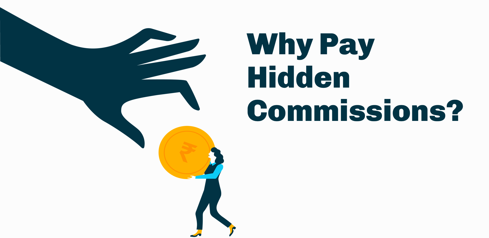

Clearfunds
Bringing simplicity and clarity to investing.
Clearfunds is an online investment advisor that lets you buy direct mutual funds from any Mutual Fund Company in India at a low, fixed fee. The robo-advisory platform provides financial planning and investment recommendations via web and mobile to India’s mass affluent.
The founders of Clearfunds have decades of experience behind them and are well known individuals in the finance sector. Their large network along with some news coverage helped Clearfunds acquire the first few hundred customers. Many users in this group were well-paid professionals who invested their money in regular mutual funds -- paying upto 1% commissions every year.

As a result, our initial messaging revolved around educating users about hidden commissions they were unknowingly paying every year with regular mutual funds. While this was a strong message and helped us acquire customers, it communicated little about other qualities of the platform.
Refreshed messaging
I worked with the founders to help them shortlist the best aspects of the platform. We then interviewed several prospective and existing customers to validate and refine our messaging. Interviewing helped understand users' needs and identify useful aspects we had missed.
Some points we highlighted were:
- The evil called hidden commissions:
We reframed and simplified our primary message - educating users about the hidden commissions associated with regular mutual funds and its impact on their savings over time. - Low, one-time fee:
Next up, we projected Clearfunds as a place where users can buy commission-free direct funds at a low one-time fee of INR 199. - Unbiased advice:
Our primary function was to provide unbiased fund recommendations and investment advice. Online platforms are often biased as they do not have all the choices or earn a commission from the fund house per sale. This was also used as a trust-building measure. - Expert-crafted portfolios:
Users often want to diversify their investments but do not want to go through the hassle of choosing funds individually. Clearfunds solved this problem by working with industry-experts to offered risk-adjusted portfolios. - Security and usability:
It is very important for a financial product to be trustworthy and technologically secure. Clearfunds is a SEBI-registered online advisor and deploys state of the art encryption. - All fund houses - one platform:
Having all the fund houses was extremely important. It meant that each and every mutual fund was available to our users on the platform — a quality most of our competitors lacked.

Illustrations
I also developed an illustration style for the Clearfunds brand — Illustrations that were to be used for the website, editorials and marketing campaigns. The primary challenge was to create a theme that reflected the seriousness and sophistication of a financial product while conveying the message in a simple manner.
I set out to define a unified theme that complemented and enhanced the messaging of the platform. Since our messaging was about small costs amounting to large sums when compounded over time, I used extra-large elements in the illustrations to depict the same. Since a standalone illustration of an object can’t convey its size, I used characters in the illustrations. Characters didn’t only bring warmth to the illustrations but also made them more dramatic.

Development of Illustration style:
- This style was initially developed for error screens. The team found it too dark and gloomy for an investing platform. Silhouttes also constrained the level of detail. However, it gave us the idea of using bold dark elements to convey negative emotions wherever needed.
- I improved the illustrations with more detail and color. This style too had two issues: First, the colors - though realistic, felt disconnected the Clearfunds brand. Secondly, the character was dressed in a western attire and was hard to relate for an Indian audience.
- I had to develop a fresh color palette for the illustrations. I refined the style further - making the illustration cleaner and flatter while adding more drama to make the characters appear more animated.

Investment Tools
Clearfunds’ primary objective is to provide superior financial advice to its users and assist them invest in the best fund schemes. While interviewing users, we identified several unsolved needs and developed tools to ease their investment decisions:
Dashboard search and explore
This was the primary way to search funds. People could additionally filter, compare and buy funds through the dashoard.
Clearfunds recommended

Having too many options may feel overwhelming to users. Clearfunds applies big-data science and analysis to come up with a short list of funds -- helping users narrow down their investment choices.

It is difficult for early investors to decide the type of funds to invest in. Fund helper educates and guides users to the appropriate fund categories — based on their time horizon and risk appetite.

Portfolios are a diversified mix of funds that help maximize returns while minimizing risk. Users answer questions regarding their financial life and their reason for investing -- based on which clearfunds recommends a personalized portfolio.
Mobile Screens
To enable a cross-platform experience, I also developed the mobile experience for Clearfunds. Since the tools and dashboards were data intensive, we followed a desktop-first approach to ensure efficient usage of the real estate. This made it more challenging to visualise the designs for smaller screens. I explored different strategies and optimised the experience to facilitate comparison. The designs will being translated into a fully-functional mobile website and can be later developed into apps.


Conclusion
The previous version of the platform was designed based on intution and assumptions -- while some of them were valid, feedback could only be collected after we had built a feature. By applying design thinking, I ensured that we validate our ideas first before building a feature -- not the other way round. This exercise helped us bring simplicity and approachability to a complex domain like finance. As a result, Clearfunds saw a several-fold increase in the number of investors on the platform.
With no prior experience in the investment sector, this was a challenging but a great learning experience for me. I was fortunate to interact with the managers of leading fund houses and learn from some of the best people in the industry.
A very special thanks the founders of Clearfunds: Kunal Bajaj, Sarosh Irani and Jaideep Tibrewala for their invaluable inputs.
Avik Dey
UI/UX Designer and Product Manager. Previously led design teams at TinyOwl/Runnr. Designed and shipped successful products for e-commerce, SaaS, Finance, Travel, Hospitality and Healthcare.